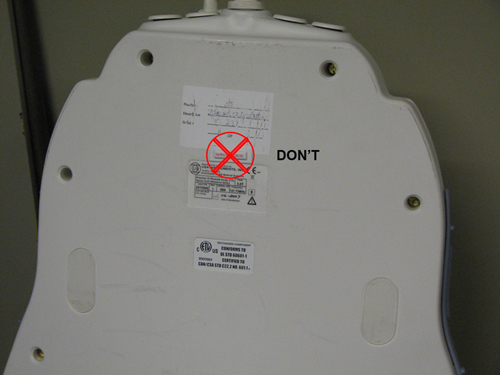

GE Exclusive Use Only
Direction 5440000, Rev# 5
Module Version 7.0, Version Date 6/24/10
GE Exclusive Use Only |
Check Table 1 or Table 2 to see which shock sensor (75G or 100G) should be installed on the coil. Make sure to install the correct shock sensor.
Remove the adhesive backing on the shock sensor. If necessary, clean the surface of the coil with alcohol before applying the shock sensor. Place the shock sensor on the coil based on the location shown in the illustrations below for each type of coil.
Follow these guidelines for proper placement of the shock sensor on the coil.
The shock sensor should not be placed on or near anything that might resemble a handle to ensure that it does not interfere with the lifting or positioning of the coil.
The shock sensor should be placed on a hard surface for proper adhesion.
Place the shock sensor so that it comes in full contact with a flat surface with no edges hanging off the coil as shown in Illustration 20.
Illustration 20: Sensor Should NOT Hang Off Edge

The shock sensor should not come in contact with the patient or any surface that the patient will come in direct contact with during scanning.
Keep the shock sensor far from patient-accessible areas to avoid any part of the patient rubbing against the edges of the shock sensor.
Make sure the shock sensor is visible but in a discreet location.
Do not install the shock sensor to any surface inside of the coil.
Do not cover up an existing label with the shock sensor, as shown in Illustration 21.
Illustration 21: Sensor Should NOT Cover an Existing Label

Do not put the shock sensor on the bottom surface of the coil or a surface that comes in contact with the patient table and/or the LPCA, as shown in Illustration 22.
Illustration 22: Sensor Should NOT Be Attached to a Bottom Surface

Place the shock sensor ONLY on the coil housing that contains the coil elements, not on separate, removable pieces or extensions of the coil, as shown in Illustration 23. For example, do not place the shock sensor on mirrors, the base plate of the coil, cables, and quick disconnects/connectors.
Illustration 23: Sensor Should NOT Be on Separate Pieces or Extensions of the Coil

Return the coils for use to the customer.
Re-use the original packaging of the coil shock sensors for transportation. Order a new box of shock sensor stickers through Coakley if you are running low. Order a couple weeks ahead of your next PM to allow for delivery.